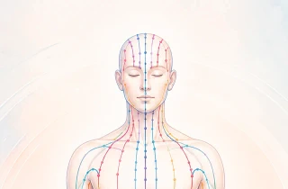
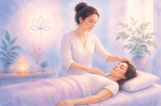
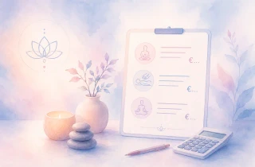

Apaiser les tensions,
Unifier les énergies...
- Accompagnement RESC - Douleur, stress, fatigue, traitements lourds... Un accompagnement doux et non invasif. En cabinet / à domicile
À propos
de moi...
Mon parcours
BIENVENUE À TOUS!
Je suis
Virginie,
mon parcours professionnel dans le secteur du soin m'a
naturellement amenée à m'intéresser à des approches complémentaires
favorisant le mieux-être et l'apaisement.
Au fil de mon expérience professionnelle, j'ai ressenti le besoin de
compléter ma pratique par une approche douce, non invasive, permettant
d'accompagner autrement les personnes confrontées à la douleur, au
stress, à la fatigue ou aux effets secondaires de certains traitements
médicaux.
C'est ainsi que j'ai découvert
la méthode RESC grâce à une collègue infirmière
travaillant auprès de patients dialysés.
En observant les bénéfices
qu'elle pouvait leur apporter au quotidien, j'ai souhaité me former à
cette approche afin de pouvoir, à mon tour, en faire bénéficier les
personnes que j'accompagne.
Aujourd'hui, je propose des
séances de RESC, adaptées à chacun.
Mon objectif est de vous offrir un moment d'écoute et
d'apaisement, en complément de votre parcours de soins ou simplement
pour retrouver un mieux-être au quotidien.
Parce qu'il n'est pas
toujours facile de se déplacer, je peux intervenir directement à votre
domicile, afin de vous accompagner dans le confort de votre
environnement.
et de vous présenter cette méthode lors d'un premier échange!
La méthode
"RESC"
La Résonance Sous-Cutanée

La RESC (Résonance Sous-Cutanée) est une approche manuelle douce et non invasive développée par Patrick Fouchier, kinésithérapeute formé à la médecine traditionnelle chinoise. Elle repose sur une écoute tactile du corps et vise à favoriser l'apaisement physique, émotionnel et psychique à travers un toucher léger et respectueux.
Cette approche complémentaire peut être proposée dans différentes situations : accompagnement de la douleur, gestion du stress et de l'anxiété, fatigue, troubles du sommeil, maladies chroniques ou encore soutien lors de traitements médicaux lourds. La RESC ne remplace jamais un suivi médical ou un traitement prescrit.
Son objectif est d'offrir un espace d'écoute et de détente permettant à chacun de mobiliser ses propres ressources dans un cadre sécurisant et bienveillant.
La RESC:
✾ Procure un moment de relaxation et de détente profonde.
✾ Favorise l’apaisement mental et émotionnel.
✾ Contribue au rééquilibrage énergétique de l’organisme.
Pour découvrir plus en détail l'origine de la méthode, ses principes de fonctionnement, ses domaines d'application et ses limites, consultez la présentation complète ci-dessous.
Pour qui?
À qui s'adresse la RESC ?
La RESC peut être proposée à toute personne,
quel que soit son âge
: enfant, adolescent, adulte ou senior. Elle s'adresse à celles et ceux
qui traversent une période difficile sur le plan
physique, émotionnel ou psychologique, ou qui
ressentent le besoin d'être accompagnés de manière différente et
complémentaire dans leur parcours de santé.
Cette approche
peut être particulièrement appréciée lorsque la maladie, la douleur, le
stress, l'anxiété ou certaines épreuves de vie viennent perturber
l'équilibre et le bien-être au quotidien.
Elle peut également
apporter un soutien lors d'un traitement médical, avant
ou après une intervention, ou simplement dans les
moments où l'on ressent le besoin de retrouver davantage de sérénité.
La
RESC repose avant tout sur une rencontre et une relation de confiance.
Pour que le soin puisse avoir lieu, il est essentiel que vous soyez
pleinement volontaire et que vous adhériez à la démarche proposée. Votre
consentement est bien sûr indispensable, mais votre motivation et votre
implication ont également toute leur place dans cet accompagnement.
Chaque séance est unique.
La RESC n'est pas un soin
appliqué automatiquement ou de façon systématique. Nous prendrons le
temps d'échanger ensemble afin d'évaluer si cette approche correspond à
vos besoins, à votre situation et à ce
que vous souhaitez vivre à ce moment de votre parcours. De mon côté, je
proposerai ce soin uniquement lorsque je me sentirai pleinement
disponible et en capacité de vous accompagner dans les meilleures
conditions.
La RESC ne remplace jamais un suivi médical ou un traitement
prescrit
. Elle s'inscrit comme une approche complémentaire, centrée sur la
personne dans sa globalité, avec pour objectif de favoriser un
mieux-être, un apaisement et une meilleure qualité de vie. Au-delà des
symptômes ou de la maladie, la RESC s'adresse avant tout à vous :
à votre vécu, à vos ressentis, à vos ressources et à votre
cheminement personnel.
Mes séances
Comment se déroule une séance ?

Une séance de RESC peut s’intégrer à différents moments de votre parcours de soins. Elle peut avoir lieu juste avant ou après un traitement, mais aussi en consultation, à distance d’un acte médical, selon ce qui est le plus adapté à votre situation.
Une séance est généralement courte, d’environ 15 à 20 minutes, et ne demande aucune préparation particulière de votre part. Vous pouvez simplement venir comme vous êtes, dans un moment où vous êtes disponible pour vous poser.
✾; Au début de la séance, nous prenons toujours un petit temps d’échange. Cela me permet de mieux comprendre comment vous vous sentez sur le moment : votre niveau de fatigue, d’anxiété, d’éventuelles douleurs, ou encore les éléments importants de votre histoire de soins. Ces informations me permettent de compléter votre fiche de suivi RESC et d’adapter l’accompagnement au plus juste.
✾ Ensuite, la séance se déroule par un contact très doux, à travers la peau, sur des points précis du corps, selon la méthode RESC. Il peut s’agir de zones situées sur les pieds, le ventre, les épaules, la tête… Le toucher est léger, respectueux, et toujours réalisé dans un cadre de sécurité et de consentement. L’objectif est de vous accompagner dans un moment d’apaisement et de recentrage.
✾ Après la séance, nous prenons à nouveau quelques instants pour échanger sur votre ressenti : ce que vous avez vécu, ce que vous avez perçu, ou simplement comment vous vous sentez à ce moment-là. Votre vécu est important et guide la suite de l’accompagnement.
La fréquence des séances est ensuite adaptée à vos besoins. Elle peut varier, souvent de 2 à 3 séances par semaine selon les situations, mais toujours en fonction de ce qui vous convient et de ce qui est possible dans votre parcours de soins.
Chaque séance est avant tout un temps pour vous, un moment pour souffler, vous poser et vous reconnecter à vos ressources, dans un cadre simple, respectueux et bienveillant.
Prestations
& tarifs
Prestations & tarifs

Je vous propose des séances de RESC comme un temps d’accompagnement complémentaire, pensé pour vous, en fonction de votre rythme, de votre état du moment et de vos besoins.
Chaque séance est un moment privilégié, entièrement dédié à votre confort et à votre vécu. Elle s’inscrit dans une démarche d’écoute, de présence et d’accompagnement personnalisé, en lien avec votre parcours de soins ou simplement avec ce que vous traversez.
Selon vos besoins, les séances peuvent être proposées de façon ponctuelle ou plus régulière. Nous prenons toujours le temps d’en discuter ensemble afin de trouver le rythme qui vous convient le mieux, sans contrainte, dans le respect de votre cheminement.
Tarif : ****€ la séance
Ce tarif correspond à une séance individuelle de RESC d’environ 15 à 20 minutes, comprenant le temps d’échange, la pratique elle-même ainsi que le suivi associé.
Les séances ne sont pas prises en charge par l’Assurance Maladie à ce jour.
Certaines mutuelles peuvent toutefois proposer un remboursement partiel dans le cadre de forfaits dédiés aux pratiques complémentaires. N’hésitez pas à vous renseigner auprès de votre organisme si besoin.
Je reste bien sûr à votre disposition pour toute question ou pour échanger sur la manière dont je peux vous accompagner.
Questions
fréquentes
Vos questions les plus courantes
✾ La RESC est-elle douloureuse ou invasive ?
Non, la RESC est une approche douce et non invasive. Elle repose sur un contact léger sur certaines zones du corps, toujours réalisé dans le respect de votre confort et de votre consentement. À tout moment, vous pouvez signaler ce que vous ressentez ou demander à adapter la séance.
✾ Comment vais-je me sentir pendant ou après une séance ?
Chaque personne vit la séance différemment. Certaines ressentent un apaisement, une détente, parfois une fatigue ou simplement une sensation de relâchement. Il n’y a pas de “bonne” ou de “mauvaise” façon de réagir : votre ressenti est toujours accueilli tel qu’il est.
✾ Y a-t-il des effets secondaires ou des contre-indications ?
La RESC est une pratique douce, non invasive. Elle est généralement bien tolérée. Dans certains cas, les émotions ou les sensations peuvent être plus présentes pendant ou après la séance, ce qui fait partie du processus d’accompagnement.
✾ Combien de séances sont nécessaires ?
Il n’y a pas de nombre fixe. Le rythme et la fréquence des séances sont adaptés à chaque personne, à son état et à ses besoins. Nous en discutons ensemble au fil de l’accompagnement.
✾ Puis-je arrêter les séances quand je le souhaite ?
Oui, bien sûr. Vous êtes libre d’interrompre l’accompagnement à tout moment. La RESC repose sur votre consentement et votre confort, il est donc essentiel que vous vous sentiez libre dans votre démarche, sans aucune obligation de poursuivre.
Contact
Échangeons ensemble!
N'hésitez pas à me contacter
Par téléphone
par mail
Lieux d'intervention
J'interviens dans le secteur des ALPES MARITIMES,
Cagnes-sur-Mer,
Saint-Laurent du Var...